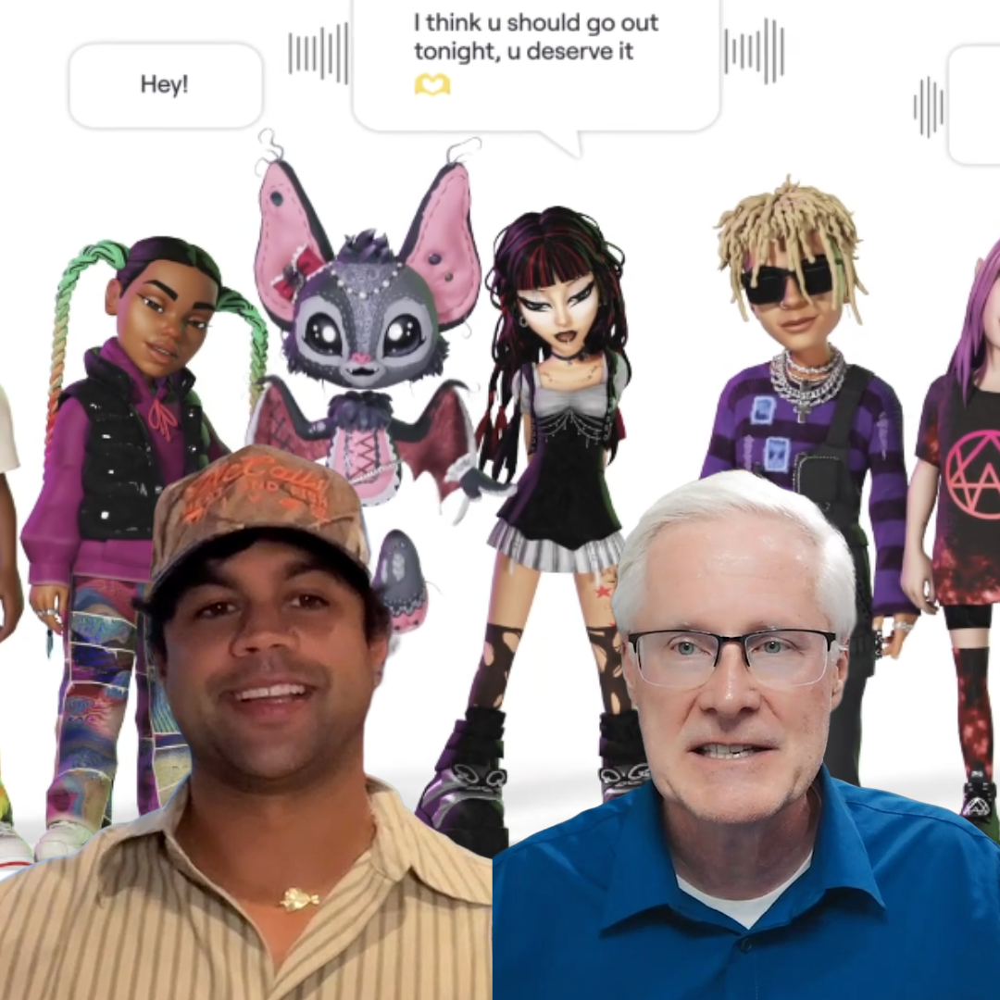

#288 Il Futuro degli Avatar AI: Akash Nigam su Genies, Identità e Mondi Digitali
In questo entusiasmante episodio di "Abbracciare la Trasformazione Digitale", il conduttore Dr. Darren accoglie Akash Nigam, fondatore e CEO di Genies, per discutere l'argomento innovativo degli avatar AI e il loro ruolo nella definizione delle nostr..
Guarda Ora Ascolta Ora
#287 From Text to Action: How AI is Transforming Bookkeeping and Beyond
In this exciting episode of "Embracing Digital Transformation," host Dr. Darren welcomes Dinesh Soomro, founder and CEO of Bookkeeper AI, to explore the transformative potential of AI for small businesses. Dinesh shares his journey from Pakistan to C..
Guarda Ora Ascolta Ora